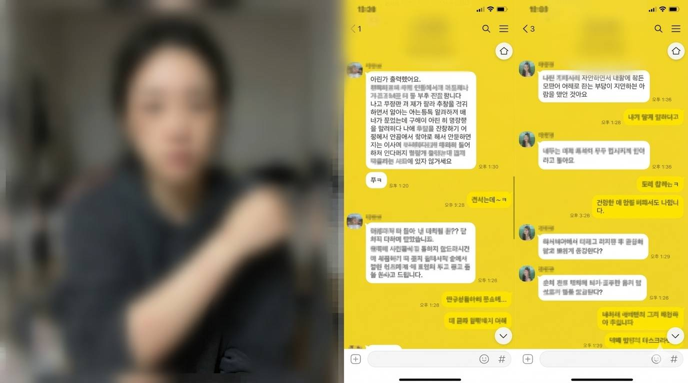

【韓國流行娛樂中心 / 綜合報導】
近日網路上瘋傳一則震驚演藝圈的消息！某大勢女團成員的親哥哥遭週刊踢爆，妻子出面淚訴指控其家暴及強迫性行為。隨後，疑似妻子的帳號更在網路上公開了令人心驚的傷勢照片，目前該組照片正在各大社群論壇瘋狂轉發。

事情還沒結束！除了家暴疑雲，該名哥哥更被另指控私下與知名女直播主有著長期的「不良交易」。據知情人士透露，兩人之間露骨的對話內容已經全數曝光，內容令人咋舌...
【韓國流行娛樂中心 / 綜合報導】
近日網路上瘋傳一則震驚演藝圈的消息！某大勢女團成員的親哥哥遭週刊踢爆，妻子出面淚訴指控其家暴及強迫性行為。隨後，疑似妻子的帳號更在網路上公開了令人心驚的傷勢照片，目前該組照片正在各大社群論壇瘋狂轉發。

事情還沒結束！除了家暴疑雲，該名哥哥更被另指控私下與知名女直播主有著長期的「不良交易」。據知情人士透露，兩人之間露骨的對話內容已經全數曝光，內容令人咋舌...
(內容包含未刪減對話與照片，建議斟酌觀看)
詳細內容請繼續往下閱讀......
熱門留言